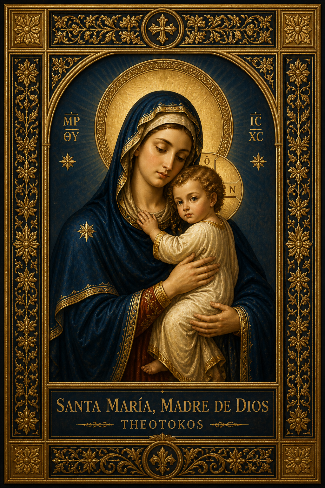

<!DOCTYPE html>
<html lang="es">
<head>
<meta charset="UTF-8">
<meta name="viewport" content="width=device-width, initial-scale=1.0">
<title>Santos - ACCAR</title>

<link href="https://fonts.googleapis.com/css2?family=Cinzel:wght@400;600&family=EB+Garamond:wght@400;500&display=swap" rel="stylesheet">

<style>

/* ===== FONDO AZUL (PROFUNDO + LUZ) ===== */
body{
  margin:0;
  font-family:'EB Garamond', serif;

  background:
    radial-gradient(1200px 500px at 50% -100px, rgba(255,255,255,.08), transparent 60%),
    radial-gradient(800px 400px at 90% 10%, rgba(46,92,90,.15), transparent 60%),
    linear-gradient(180deg,#1a3f7a 0%, #0c2c66 60%, #081f4a 100%);
}

/* CONTENEDOR */
#app{
  padding:60px 20px 100px;
}

/* ===== HEADER (IMPACTO) ===== */
.santo-hero{
  display:flex;
  align-items:center;
  justify-content:center;
  gap:60px;
  margin-bottom:70px;
}

.santo-img{
  flex:0 0 280px;
}

.santo-img img{
  width:100%;
  border-radius:16px;
  transition:.4s;
  box-shadow:
    0 40px 90px rgba(0,0,0,.8),
    0 0 0 1px rgba(255,255,255,.06),
    0 0 40px rgba(212,175,55,.25);
}

.santo-img img:hover{
  transform:scale(1.03);
  box-shadow:
    0 50px 120px rgba(0,0,0,.9),
    0 0 0 1px rgba(255,255,255,.1),
    0 0 60px rgba(46,92,90,.45);
}

.santo-head{
  color:#f6f1e6;
  max-width:620px;
}

.santo-fecha{
  color:#e3c46a;
  font-size:20px;
  font-weight:bold;
  letter-spacing:.5px;
}

.santo-nombre{
  font-family:'Cinzel', serif;
  font-size:44px;
  margin:10px 0;
  text-shadow:
    0 4px 14px rgba(0,0,0,.6),
    0 0 12px rgba(212,175,55,.25);
}

.santo-subtitulo{
  font-size:17px;
  opacity:.95;
}

/* ===== PERGAMINO (TEXTURA + VIDA) ===== */
.santo-content{
  max-width:1000px;
  margin:0 auto;
  padding:90px 45px;

  background:
    radial-gradient(circle at top, rgba(255,255,255,.45), transparent 60%),
    linear-gradient(180deg,#f2e4c4,#d9c39a);

  border-radius:18px;

  box-shadow:
    0 60px 140px rgba(0,0,0,.75),
    inset 0 0 60px rgba(0,0,0,.22);

  position:relative;
  overflow:hidden;
}

/* BORDE DORADO ILUMINADO */
.santo-content::before{
  content:"";
  position:absolute;
  inset:0;
  border-radius:18px;
  padding:1px;
  background:linear-gradient(120deg,#e8c76a,#fff2c6,#caa64a);
  -webkit-mask:
    linear-gradient(#000 0 0) content-box,
    linear-gradient(#000 0 0);
  -webkit-mask-composite:xor;

  pointer-events:none; /* 🔥 ESTA LÍNEA ES LA CLAVE */
}

/* ===== TARJETA INTERIOR (FLOTA) ===== */
.santo-inner{
  max-width:720px;
  margin:0 auto;
  padding:55px;

  background:
    linear-gradient(180deg,#fbf6ea,#eadbb7);

  border-radius:14px;

  box-shadow:
    0 35px 80px rgba(0,0,0,.5),
    inset 0 0 25px rgba(0,0,0,.12);

  overflow:hidden;
}

/* ===== TÍTULOS (DORADO VIVO) ===== */
h2{
  font-family:'Cinzel', serif;
  color:#e3c46a;
  margin-top:48px;
  padding-bottom:8px;
  border-bottom:1px solid rgba(227,196,106,.7);

  text-shadow:0 1px 2px rgba(0,0,0,.2);
}

/* ===== TEXTO (MEJORADO) ===== */
p{
  line-height:1.95;
  font-size:17px;
  color:#333a38; /* verde profundo elegante */
}

/* TEXTO CONSAGRACIÓN */
.santo-box > p{
  color:#0c2c66;
}

/* TEXTO EN TARJETAS AZULES */
.oracion-card p{
  color:#ffffff;
}

/* ORACIÓN */
.oracion p{
  margin:4px 0;
}
.oracion p.bloque{
  margin-top:18px;
}

/* ===== TARJETA FINAL ===== */
.santo-box{
  margin-top:70px;
  padding:35px;

  border-radius:14px;

  background:
    linear-gradient(145deg,#efe2c3,#d4be91);

  border:1px solid rgba(212,175,55,.6);

  box-shadow:
    inset 0 0 25px rgba(0,0,0,.18),
    0 25px 60px rgba(0,0,0,.35);

  transition:.45s;
}

.santo-box:hover{
  transform:translateY(-8px) scale(1.01);

  background:
    linear-gradient(145deg,#f4ead3,#cfba8f);

  border:1px solid rgba(46,92,90,.7);

  box-shadow:
    inset 0 0 25px rgba(0,0,0,.18),
    0 45px 100px rgba(0,0,0,.55),
    0 0 40px rgba(46,92,90,.25);
}

.divisor{
  height:1px;
  background:linear-gradient(
    90deg,
    rgba(212,175,55,.6),
    rgba(46,92,90,.6),
    rgba(212,175,55,.6)
  );
  margin:28px 0;
}

/* ===== TARJETAS ORACIÓN (IMPACTO REAL) ===== */
.oracion-card{
  padding:26px;
  border-radius:12px;

  background:
    linear-gradient(180deg,#0c2c66,#081f4a);

  border:1px solid rgba(227,196,106,.6);

  box-shadow:
    inset 0 0 20px rgba(0,0,0,.35),
    0 25px 60px rgba(0,0,0,.35);

  transition:.45s;
}

.oracion-card:hover{
  transform:translateY(-10px) scale(1.02);

  background:
    linear-gradient(180deg,#0e357a,#0a255a);

  border:1px solid rgba(227,196,106,.8);

  box-shadow:
    0 40px 80px rgba(0,0,0,.55),
    0 0 25px rgba(227,196,106,.25);
}

/* TITULOS EN TARJETAS */
.santo-box strong,
.oracion-card strong{
  color:#e3c46a;
  font-size:18px;
  display:block;
  margin-bottom:8px;
  letter-spacing:.3px;
}

/* SOLO CONSAGRACIÓN EN AZUL */
.santo-box > p strong{
  color:#0c2c66;
}

/* ===== NUEVO: BREADCRUMB ===== */
.breadcrumb{
  max-width:1000px;
  margin:10px auto 40px auto;
  font-size:18px;
  font-weight:500;
  letter-spacing:.3px;
}

.breadcrumb a{
  text-decoration:none;
}

/* SEPARADORES "/" */
.breadcrumb{
  color:#e3c46a; /* dorado */
}
/* LINKS DORADOS */
.bc-link{
  color:#e3c46a;
  transition:.3s;
}

.bc-link:hover{
  color:#f0d97a;
}

/* DÍA EN BLANCO */
.bc-dia{
  color:#ffffff;
}

/* ===== NUEVO: RECUADRO ESPIRITUAL ===== */
.recuadro-espiritual{
  margin-top:30px;
  padding:28px;
  border-radius:14px;

  background:
    linear-gradient(145deg,#f4ead3,#d8c49c);

  border:1px solid rgba(212,175,55,.6);

  box-shadow:
    inset 0 0 20px rgba(0,0,0,.15),
    0 20px 50px rgba(0,0,0,.25);

  transition:.4s;
}

.recuadro-espiritual:hover{
  transform:translateY(-6px);

  box-shadow:
    inset 0 0 20px rgba(0,0,0,.15),
    0 35px 80px rgba(0,0,0,.45);
}

/* RESPONSIVE */
@media(max-width:900px){

  #app{
    padding:60px 12px;
  }

  .santo-hero{
    flex-direction:column;
    text-align:center;
    gap:25px;
  }

  .santo-img{
    width:220px;
  }

  .santo-nombre{
    font-size:32px;
  }

  .santo-content{
    padding:40px 20px;
  }

  .santo-inner{
    padding:30px 20px;
  }

}

/* FIX GLOBAL SCROLL MÓVIL */
html{
  overflow-x:hidden;
}

body{
  overflow-x:hidden;
  max-width:100%;
}

#app{
  max-width:100%;
  overflow-x:hidden;
}

/* EVITA DESBORDES POR PADDING */
*{
  box-sizing:border-box;
}
</style>

</head>

<body>

<div id="app"></div>

<script>

document.getElementById("app").innerHTML = `
<div class="santo-shell">

<div class="santo-hero">
  <div class="santo-img">
    
  </div>

  <div class="santo-head">
    <div class="santo-fecha">✝ 1 de enero</div>
    <div class="santo-nombre">Santa María, Madre de Dios</div>
    <div class="santo-subtitulo">Solemnidad — Theotokos</div>
  </div>
</div>

<div class="breadcrumb">
<a href="../index.html" class="bc-link">Inicio</a> / 
<a href="../santos.html" class="bc-link">Santos</a> / 
<a id="bc-link-mes" class="bc-link" href="#"> <span id="bc-mes"></span> </a> / 
<span class="bc-dia" id="bc-dia"></span>
</div>

<div class="santo-content">
<div class="santo-inner">

<h2>Vida de María Santísima</h2>

<p>La Iglesia cristiana católica celebra en este día la solemnidad de Santa María, Madre de Dios, un dogma central de la fe que afirma que Jesucristo, verdadero Dios y verdadero hombre, nació de la Virgen María.</p>

<p>El título <strong>Theotokos</strong> fue proclamado en el Concilio de Éfeso en el año 431.</p>

<p>✝ San Ignacio de Antioquía († 107): “Dios nacido de María”.</p>
<p>✝ San Ireneo de Lyon († 202): María, nueva Eva.</p>
<p>✝ Orígenes († 253): maternidad divina.</p>
<p>✝ San Atanasio († 373): el Verbo tomó carne de María.</p>
<p>✝ San Gregorio Nacianceno († 390): quien niega a María como Madre de Dios, niega a Cristo.</p>
<p>✝ San Cirilo de Alejandría († 444): defensor del dogma de la Theotokos.</p>

<h2>Lecciones espirituales</h2>

<p>María nos enseña la fe perfecta.</p>
<p>Nos enseña la humildad profunda.</p>
<p>Nos enseña la obediencia total.</p>
<p>Nos enseña el silencio contemplativo.</p>

<h2>Oración</h2>

<div class="oracion">

<p>Oh María, Madre de Dios,</p>
<p>tú que eres la estrella del mar,</p>
<p>ilumina nuestro camino,</p>
<p>y guíanos hacia tu Hijo.</p>

<p class="bloque">En nuestras dudas, danos fe;</p>
<p>en nuestras caídas, levántanos;</p>
<p>en nuestras pruebas, fortalécenos.</p>

<p class="bloque">Oh dulce Madre, no nos abandones,</p>
<p>y llévanos siempre a Cristo.</p>

<p class="bloque">Por Jesucristo nuestro Señor.</p>
<p><strong>Amén.</strong></p>

</div>

<h2>Cita bíblica (Lc 2,16–19)</h2>

<p><strong>16</strong> Fueron deprisa y encontraron a María, a José y al niño...</p>
<p><strong>17</strong> Al verlo, dieron a conocer lo que les habían dicho...</p>
<p><strong>18</strong> Todos se admiraban...</p>
<p><strong>19</strong> María guardaba todo en su corazón.</p>

<h2>También se celebran hoy</h2>

<p>• San Fulgencio de Ruspe</p>
<p>• San Vicente María Strambi</p>

<h2>Meditación del día</h2>

<p>Hoy comienzas un año bajo la mirada de una Madre.</p>
<p>Entrégale tu vida sin reservas.</p>
<p>Deja que María te conduzca a Cristo.</p>

<h2>Recuadro espiritual</h2>

<p>Comienza este año poniéndote bajo el amparo de la Santísima Virgen María.</p>
<p>Consagra tu vida a Dios, confía en su providencia y camina con fe firme.</p>

<div class="santo-box">

<p><strong>Día de consagración a la Virgen María</strong></p>
<p>Entrega tu año a Dios por medio de su Madre.</p>

<div class="divisor"></div>

<div class="oracion-card">
<p><strong>Bajo tu amparo</strong></p>
<p>Bajo tu amparo nos acogemos, Santa Madre de Dios; no desprecies las súplicas que te dirigimos en nuestras necesidades, antes bien líbranos de todo peligro, oh Virgen gloriosa y bendita.</p>
</div>

<div class="divisor"></div>

<div class="oracion-card">
<p><strong>Sub tuum praesidium</strong></p>
<p>Sub tuum praesidium confugimus, sancta Dei Genitrix; nostras deprecationes ne despicias in necessitatibus nostris, sed a periculis cunctis libera nos semper, Virgo gloriosa et benedicta.</p>
</div>

</div>

</div>
</div>

</div>
`;

// ===== AUTOMATIZACIÓN BREADCRUMB =====
const meses = [
  "Enero","Febrero","Marzo","Abril","Mayo","Junio",
  "Julio","Agosto","Septiembre","Octubre","Noviembre","Diciembre"
];

// ===== AUTOMATIZACIÓN BREADCRUMB (DINÁMICO DESDE CONTENIDO) =====
const textoFecha = document.querySelector(".santo-fecha").textContent;

// Ejemplo: "✝ 1 de enero"
const partes = textoFecha.toLowerCase().match(/(\d+)\s+de\s+([a-záéíóúñ]+)/);

const diaNumero = partes[1];
const mesNombre = partes[2].charAt(0).toUpperCase() + partes[2].slice(1);

document.getElementById("bc-mes").textContent = mesNombre;
document.getElementById("bc-dia").textContent = diaNumero + " de " + mesNombre;
const mesSlug = mesNombre.toLowerCase();
document.getElementById("bc-link-mes").href = "mes.html?mes=" + mesSlug;

</script>
</body>
</html>